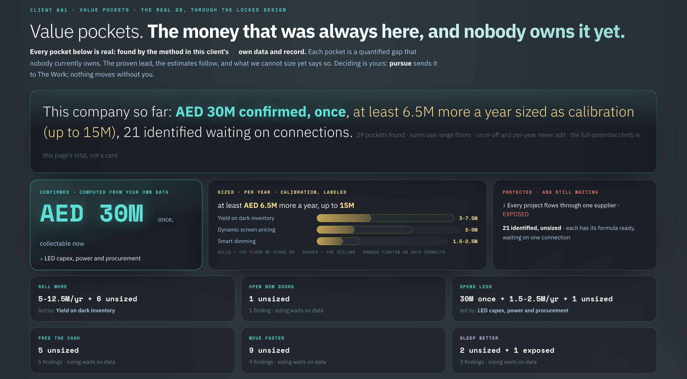
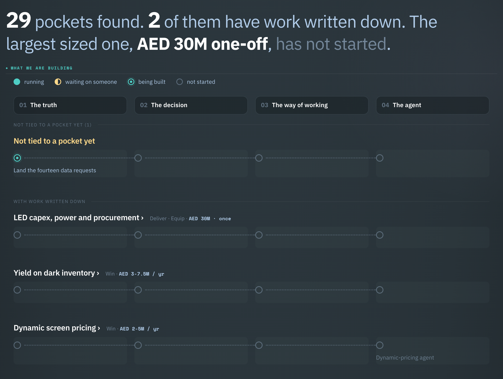
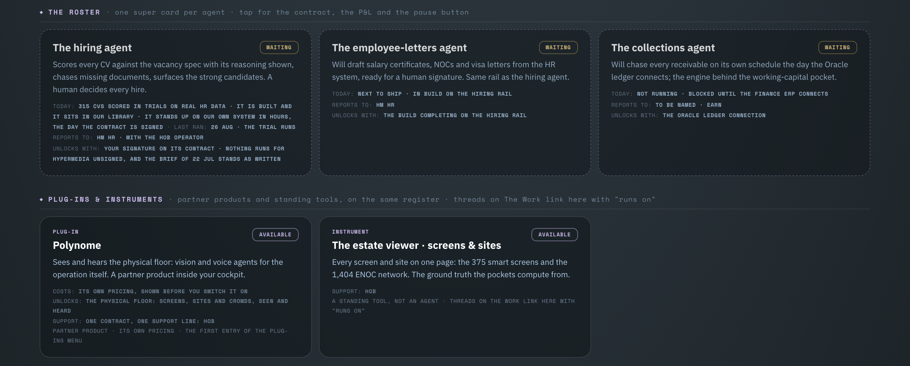

Your whole company on one screen, run by your people and agents together. We draw it from your own data and records, show you where the money leaks and what is waiting on a decision, then automate what can and should be. Built in the UAE, with global backing. Built in the UAE, with global backing.
People, systems and money as one living map, drawn from what you already have and kept current as the business moves. Three numbers that tell you how it is doing, the findings that surface on their own, and the decisions that arrive ready to approve. Nothing new to learn, it becomes your company's map for AI: every workflow, every agent, every decision, one place. The demo below is illustrative. The real screens are further down the page.
A supervised workforce of AI agents takes on your repetitive, rule-based work inside your existing systems, nothing migrated, everything logged. Humans decide, agents do.
We bring decades of enterprise workflows, governance and operating rules, packaged with AI that plugs into your business with minimal customization. You start from working, not from blank, and the library keeps growing.
Every workflow we automate feeds the library, so the next one lands faster and cheaper than the last. It compounds with every deployment. The company that starts first pulls ahead, and the gap only widens, don't let a competitor compound before you.
It works inside your own systems: your ERP, your spreadsheets, your chat. Nothing to migrate, nothing new to learn.
Like connecting a bank account. It sees only what you permit, acts only where you permit, and logs every step.
Your data never leaves your walls. For sensitive work, it runs on your own machines, nothing sent outside.
The machines take the busywork. Your team makes the decisions. Same team, more done.
Not concept demos. These are working systems from our build floor and our portfolio of companies: real screens, real counts, live repositories. Every new client starts from here, tuned to their business.
Reads every CV against the role, cross-examines the candidate's claims against it, and attaches evidence to every verdict. It screens what HR systems never could. Your team hires; it never decides.
What they take over: quotes, collections, reporting, approvals, handoffs, scheduling, reconciliation, filings, escalations. The whole workflow, not a tool bolted on the side, if the work is repetitive and rule-based, an agent can own it end to end.
The client's name is removed. Everything else is theirs: their files, their systems, their money, computed rather than typed.



This is the part people ask about first, so here it is drawn. One engine sits above every cockpit. What moves into it is the method: the shape of a problem and how it was solved. What moves back out is everything learned so far.
No client data ever crosses. Not a number, not a file, not a name. Each company's records stay inside its own gate, and what compounds between them is the method, which is ours to carry. That is why the fifth cockpit took one working session and the first took two people months.
No timeline to sit through. We connect to your existing data, read your reports and documentation, and our agents talk to your teams on the messaging apps they already use. From there, the loop runs. The agent is step seven, not step one: an agent pointed at work nobody has fixed only does the wrong work faster.
Existing data, reports and documentation, read in place. Agents chat with your teams on the apps they already use. Nothing migrated.
All of it drawn into one live picture of how the company actually runs.
Where the money leaks, each one priced and linked to its source.
Ranked by value, so the first move is the one that pays the most.
Before any agent. Who does what, in what order, and what gets dropped. Written down, and owned by a named person.
Adoption measured at 30, 60 and 90 days against the way it ran before. Nobody validates by claim.
Now the agent. One workflow live in production, measured against the manual baseline.
Then the next, and the next. The picture stays live as the company moves.
Every morning the company reports to your pocket, three numbers that moved and one finding priced. And the one decision that needs you arrives in the same chat you already use, with the why attached. You reply, it is logged, and it acts.
Approvals come to you, in one line, with the reason and the source attached.
Managed after launch. We monitor the agents and keep them current. You never manage the technology yourself.
Nothing hidden. The moment you reply, it acts and logs the step. Every approval is traceable.
Someone in your market will run on agents first. Every quarter you wait, theirs learn your market. Decide if it is you.